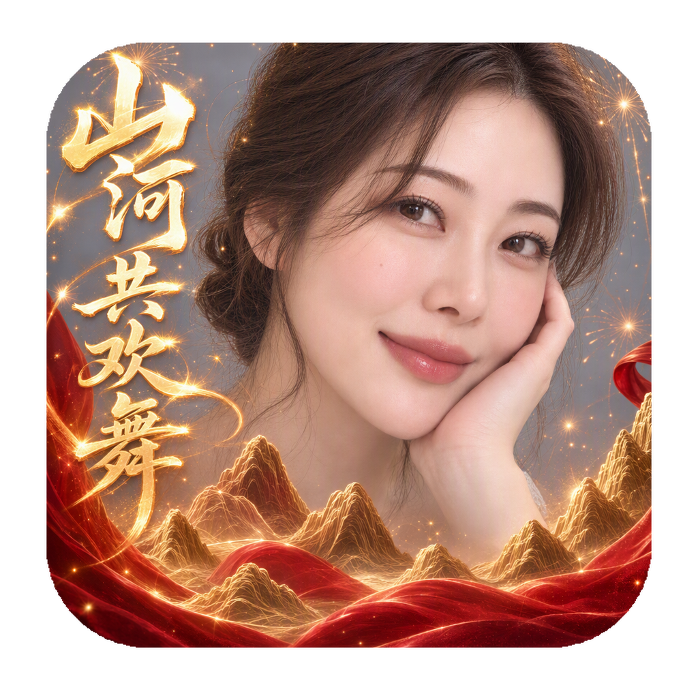
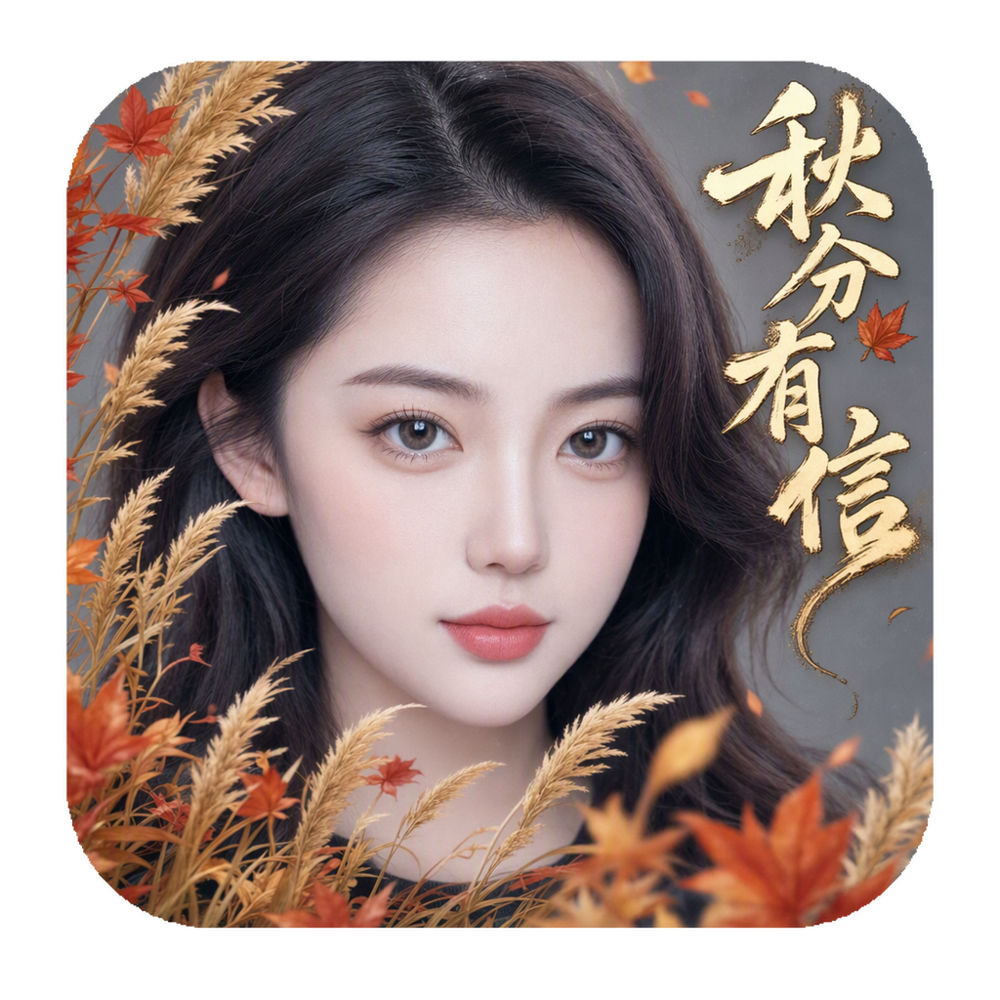
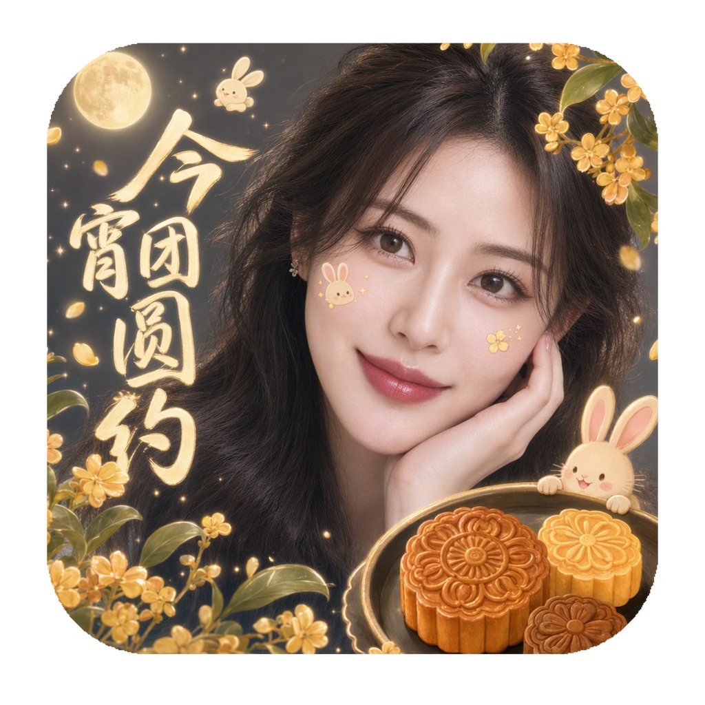

山河共欢舞
红金山河、丝带与烟花，构建喜庆而有层次的动态画面。
特效（魔法表情）是快手主站重要的内容和流量入口。过去，设计师需要使用 Photoshop、AE 等工具逐步制作素材，一个复杂特效可能要花约一天。借助多模态模型与 AI Agent，我们将生成、检查和打包串成自动化流程：单个特效从需求到完整交付约需 20 分钟，交付内容包括预览视频、素材包、图标和名称。根据项目阶段性站内数据，AI 特效在大幅度提效的前提下，数据表现已追平传统特效。
从创意需求到完整特效资产，Agent Loop 负责推进任务，Harness 负责控制各阶段的调用与质量检查。
统一管理任务状态、Skill 选择、模型调用和检查点；遇到未达标结果时，回到对应阶段继续调整。
Agent Loop 将主题、人物与风格约束转为执行计划。
需求 → 计划图像模型生成主题画面，明确人物和装饰元素的关系。
GPT Image 2视频模型让前景、人物互动与节日元素动起来。
Wan Alpha / Seedance核对画面效果与素材规格；不合适的结果返回生成阶段。
质量门控输出预览视频、素材包、产品图标与效果名称。
完整特效资产视频可直接播放；旁边的小图是对应的icon图标。

红金山河、丝带与烟花，构建喜庆而有层次的动态画面。

用芦苇、枫叶和秋日金色调，表达季节情绪与人物气质。

月亮、桂花、玉兔与月饼共同构成中秋场景，并加入面部贴纸。